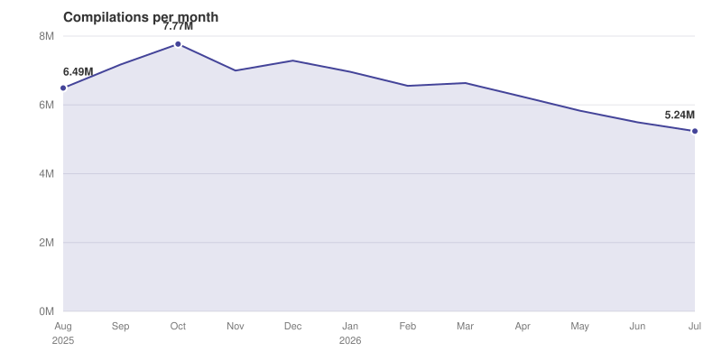
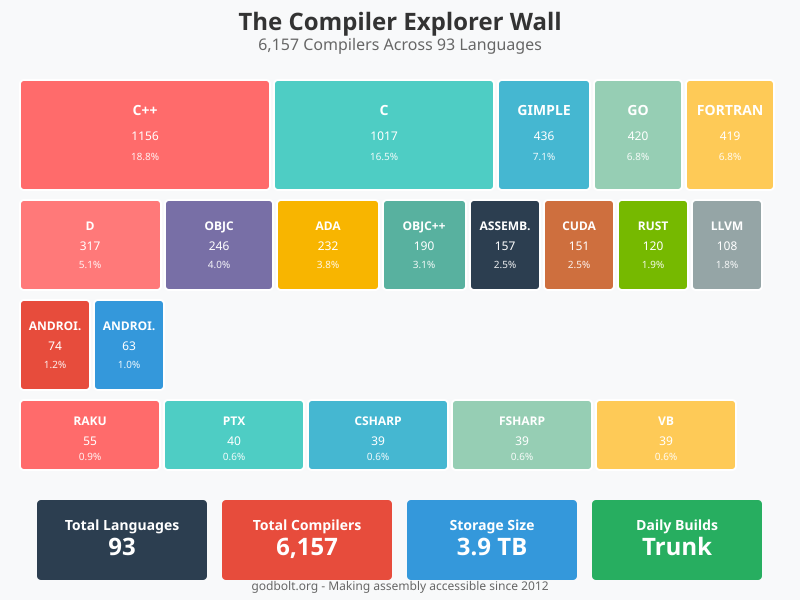

Compiler Explorer 2026 年 AWS 架构与运行内幕
文章背景与核心概要
本文深入揭秘了知名在线代码编译与汇编工具 Compiler Explorer（godbolt.org）在 2026 年的 AWS 云端架构演进。从 2016 年单台服务器配合数个 Docker 容器的简单架构，发展到如今每年处理数千万次编译请求的庞大系统，Compiler Explorer 巧妙地结合了 CloudFront、S3、ALB、EC2 Spot 实例、EFS（结合自定义 CEFS 文件系统）以及 DynamoDB 等服务。文章详细拆解了其在控制每月仅约 $3,600 运营成本的同时，如何支持 93 种语言和超过 6,000 个编译器版本，并保障无死链与极致的用户隐私。
在 LLM 协助下撰写。具体细节见文末。
Written with LLM assistance. Details at end.
概要
Summary
本文深入、幕后地展示了截至 2026 年 Compiler Explorer (godbolt.org) 如何在亚马逊云服务（AWS）上运行。该网站从 2016 年的简单多容器架构过渡到如今每年处理数千万次编译的健壮云端基础设施，高效利用了各种 AWS 服务组合——包括 CloudFront、S3、弹性负载均衡（ELB）、EC2 竞价实例（Spot Instances）、带 CEFS 的 EFS 以及 DynamoDB。
This article provides an in-depth, behind-the-scenes look at how Compiler Explorer (
godbolt.org) operates on Amazon Web Services (AWS) as of 2026. Transitioning from a simple multi-container setup in 2016 to a robust cloud infrastructure processing tens of millions of compilations annually, the site leverages a sophisticated mix of AWS services—including CloudFront, S3, Elastic Load Balancing, EC2 Spot Instances, EFS with CEFS, and DynamoDB.
Compiler Explorer 每月的运行费用大约为 3,600 美元（部分由开源额度和社区赞助抵消），支持 93 种语言的 6,000 多个编译器条目，同时始终坚持零失效链接（zero link rot）和彻底的用户隐私承诺。
Operating at roughly $3,600 a month (partially offset by open-source credits and community sponsorships), Compiler Explorer supports over 6,000 compiler entries across 93 languages while maintaining a steadfast commitment to zero link rot and complete user privacy.
目录
Table of Contents
- 将代码发送到我们的服务器
- 负载均衡器背后的庞大集群舰队
- 租用没人要的零碎算力
- 为什么编译器才是最难的部分
- 每晚通宵构建编译器
- 完成了一半的功能模块
- 其他所有组件
- 一些数据统计
- 我仍想修复的事情
- 致谢与声明
- 脚注
- Getting Your Code to Our Servers
- Rather a Lot of Fleets Behind One Load Balancer
- Renting the Bits Nobody Else Wants
- Why the Compilers Are the Hard Part
- Building Compilers All Night, Every Night
- The Bits That Are Half-Finished
- Everything Else
- Some Numbers
- Things I'd Still Like to Fix
- Thanks & Disclaimer
- Footnotes
我一直想写一篇关于 Compiler Explorer 实际上如何在亚马逊云上运行的更新文章，这件事在我的待办列表里放了好久，排在我那可笑地称之为“业余时间”的其他各种琐事之后。[^1]
I've been meaning to write an update on how Compiler Explorer actually runs on Amazon's cloud, and it's been sat on my list for a good while now, somewhere behind the other random things that take up what laughably I refer to as my spare time.[^1]
我上一次撰文介绍这一点是在 2016 年，当时整个网站就是一个负载均衡器、几个实例以及我笔记本电脑上构建的一些 Docker 容器。去年夏天我写了一篇长得多的 工作原理介绍，但那篇主要关于 Compiler Explorer 本身，只是顺带提到了支撑它的云基础设施。
The last time I wrote about this was 2016, when the whole site was a load balancer, a couple of instances and some Docker containers I built on my laptop. I wrote a much longer how it works last summer, but that one is mostly about Compiler Explorer and only incidentally about the cloud it sits on.
我们在 AWS 上运行并不是什么秘密，也没有任何隐藏：infra 仓库 包含所有的 Terraform、安装脚本以及驱动这一切的 ce 命令行工具。如果你更愿意看代码而不是我的文字描述，请自便。因此，本文将从另一个角度切入，按照你的编译请求碰到它们的顺序列举我们所依赖的亚马逊服务。
It's no secret that we run on AWS, and none of it is hidden: the infra repository has all the terraform, the install scripts and the
cecommand line tool we drive the whole thing with, so if you'd rather read the real thing than my description of it, help yourself. So this one goes the other way round, through the Amazon services we lean on, roughly in the order your compile request runs into them.
将代码发送到我们的服务器
Getting Your Code as Far as Our Servers
你的浏览器首先会与 CloudFront 通信，这是亚马逊的 CDN。我们运行两个独立的 CloudFront 分发网络。在 godbolt.org 前面的那个基本上只是把请求转发给我们的负载均衡器，并在合理范围内进行缓存以及对返回内容进行压缩。[^2] 体积较大的静态资源则保存在位于 static.ce-cdn.net 的第二个分发网络背后的 S3 存储桶中：编译好的 JavaScript、图像、Web 字体等。其中占最大头的是 Monaco，即来自 Visual Studio Code 的编辑器组件，正是它提供了语法高亮、波浪线警告等功能。对于只想要看点汇编代码的用户来说，传输这些 JavaScript 是一笔不小的开销，因此将其缓存在离用户更近的地方非常划算。
Your browser talks to CloudFront, Amazon's CDN. We run two separate CloudFront distributions. The one in front of
godbolt.orgmostly just hands requests on to our load balancer, caching what it sensibly can and compressing things on the way back out.[^2] The bulky static stuff lives in an S3 bucket behind a second distribution atstatic.ce-cdn.net: the compiled JavaScript, the images, the web fonts. Much the largest part of that is Monaco, the editor component out of Visual Studio Code, which is what gives you the syntax highlighting and the squiggly underlines and the rest of it. It's a lot of JavaScript to send someone who only wants to look at some assembly, so it's worth having it cached near them.
坐落在这前面的是 WAF，负责处理我们的速率限制。我们的限制 非常 简单而且 非常 宽松，主要是因为我们过去要求很严，但经常误伤 C++ 培训班：会议 NAT 后面的整个教室看起来就像一个极其疯狂的单一 IP 地址。我们也许可以用指纹技术做得更聪明一些，但直接提高限制更容易，而且自那以后也没出过问题。[^3]
Sitting in front of that is WAF, doing our rate limiting. Our limits are very simple and very high, mostly because we used to be stricter and it kept catching C++ trainers: a whole classroom behind a conference's NAT looks like a single very keen IP address. We could probably do something cleverer with fingerprinting, but raising the limit was easier and it hasn't been a problem since.[^3]
负载均衡器背后的庞大集群舰队
Rather a Lot of Fleets Behind One Load Balancer
在 CloudFront 后面是一个单独的 Application Load Balancer（应用负载均衡器）。它通过请求路径判断该请求属于哪个集群，然后挑选该集群中一个健康的实例将请求发送过去。几乎所有没有特殊前缀的请求都直接送往生产集群（production fleet），这也是绝大部分流量的终点。/beta* 和 /staging* 分别流向 beta 和 staging 集群。[^4] /winprod* 去往运行 MSVC 的 Windows 实例集群，/aarch64prod* 去往原生运行 ARM 代码而非模拟运行的 Graviton 机器集群，而 /gpu* 则去往配备了真实 NVIDIA 显卡的机器。[^5]
Behind CloudFront is a single Application Load Balancer. It works out from the path which cluster a request is for, and then picks a healthy instance in that cluster to send it to. Almost everything has no special prefix at all and goes to the production fleet, which is where the overwhelming bulk of the traffic ends up.
/beta*and/staging*go to the beta and staging fleets.[^4]/winprod*goes to a fleet of Windows instances running MSVC,/aarch64prod*to Graviton machines that run ARM code natively rather than under emulation, and/gpu*to machines with real NVIDIA cards in them.[^5]
其中每个集群都是一个 Auto Scaling Group（自动扩缩容组），如今每个组都采用了双份配置：蓝色和绿色。进行部署时，我们启动另一种颜色的集群，等待它恢复健康，将负载均衡器的目标组指向它，并排干旧集群的流量。如果发现有问题，只需指回旧集群即可。在这之前，部署意味着使用我们的 ce 命令行工具对集群进行滚动重启，一次一个实例。那种方式也算管用，但要撤回一个有问题的发布意味着整个集群再次向前滚动重启回到上一个版本，这在刚搞砸网站时显得有些缓慢。
Each of those is an Auto Scaling Group, and these days each one is doubled up: a blue and a green. To deploy, we bring up the other colour, wait for it to go healthy, point the load balancer's target group at it and drain the old one. If it's wrong, we point it back. Before that, deploying meant a rolling restart of the fleet with our
cecommand line tool, one instance at a time. That worked well enough, but backing out a bad release meant rolling the whole fleet forward again onto the previous version, which is a bit slow when you've just broken the site.
扩缩容逻辑本身非常简单：我们只是尽量保持平均 CPU 负载低于某个阈值。我们曾探讨过更复杂的方案，但目前这个方案是开箱即用的。[^6]
The scaling itself is simple: we just try and keep the average CPU load below a threshold. We've kicked around more sophisticated ideas but this one is supported out of the box.[^6]
租用没人要的零碎算力
Renting the Bits Nobody Else Wants
生产集群几乎全部由 Spot 实例 组成——即闲置的 EC2 算力，以极低的价格出售，前提是如果 AWS 需要，你可能会在收到 2 分钟通知后被强行驱逐。相比按需实例，这能节省 60-90% 的成本——对我们来说是一笔巨款。
The production fleet is almost entirely spot instances -- unused EC2 capacity, sold off cheap, on the understanding that you can be evicted at two minutes' notice. It's a 60-90% saving over on-demand -- quite a lot of money, for us.
我们之所以能安然使用 Spot 实例，是因为我们的单个实例其实无足轻重。所有需要持久化的内容都保存在共享文件系统、S3 或 DynamoDB 中，因此一个突然消失的实例无非是被新实例替换掉而已。我们在 m5、m6、m7、r6 以及 i3 / i4i 系列中请求 16 种不同类型的实例。配置的分配策略是 price-capacity-optimized——亚马逊官方翻译过来就是“选择其中最便宜且最不容易被回收的型号”。在实际运行中，一旦我们被驱逐，扩缩容组就会感知到并自动补上一台新实例。
We can get away with that because our instances don't really matter. Everything that needs to survive lives on the shared filesystem, in S3 or in DynamoDB, so an instance that vanishes is just an instance that gets replaced. We ask for sixteen different instance types across the
m5,m6,m7,r6andi3/i4ifamilies. The allocation strategy isprice-capacity-optimized-- Amazon's way of saying "pick whichever of these is cheapest and least likely to get yanked". In practice we get evicted, the scaling group notices, and a new one turns up.
为什么编译器才是最难的部分
Why the Compilers Are the Hard Part
我们拥有分布在 93 种语言中的约 6,000 个编译器条目[^9]，而且我们从不删除其中任何一个。[^7] 编译器版本一旦上线就会永久保留，因此 Stack Overflow 上展示 GCC 4.8 代码生成特性的解答直到今天依然可以编译。这是我们对抗链接失效（link rot）的决心，但这也意味着我们囤积了数量极其庞大的二进制文件。
We have around 6,000 compiler entries[^9] across 93 languages, and we never delete any of them.[^7] Once a compiler version goes up it stays up, so that Stack Overflow answer showing a GCC 4.8 codegen quirk still compiles today. It's our bit against link rot, and it does mean we hoard an awful lot of binaries.
所有这些都存放在 EFS（亚马逊的弹性 NFS）上，而 NFS 是存在网络延迟的。类 C 语言会引入数量极其庞大的微小头文件，因此最朴素的直接读取方案慢到根本无法使用。我们听起来有点傻的解决方案是：为每个编译器构建一个 SquashFS 镜像，将镜像同样保存在 EFS 上，然后通过 loopback 设备进行挂载。这样一来，内核就会认为自己在和一个本地块设备打交道，从而正确地缓存数据块，而不是每次读取都要跨建筑找服务器确认。[^10]
All of that lives on EFS, Amazon's elastic NFS, and NFS has latency. C-like languages pull in an enormous number of very small header files, so the naive version of this is unusably slow. Our fix, which sounds daft, is to build a SquashFS image per compiler, store the image also on EFS, and mount it through a loopback device. The kernel then thinks it's talking to a local block device and caches blocks properly instead of checking with a server in another building every time.[^10]
该方案成功奏效了，但这意味着每次开机都要挂载数千个镜像，这不仅要花上一大半分钟的时间，还导致数千个文件系统的元数据一直驻留在内核内存中。这些被缓存的元数据正是 SquashFS 性能碾压 NFS 的关键原因，因此谈不上浪费；只是对于任何一个具体的实例来说，它可能只会接触到极少一部分编译器，所以我们相当于为了使用一小部分而支付了全部的内存开销。我花了三年时间和多次尝试才解决这个问题，答案就是 CEFS：采用内容寻址的镜像打包成大约 20GB 的包，并在首次访问路径时由 autofs 按需挂载。这一架构迁移使我们的镜像数量从 2,182 个大幅减少到 121 个，操作系统启动时间从 50 秒缩短到 20 秒！不过自那以后，镜像数量又慢慢爬升到了约 883 个，因为每晚的构建不断产生新镜像，而整合清理只针对已存在的包。在我写这篇文章时进行的一次垃圾回收清理出了 111 个没有任何引用的废弃镜像，容量约为 63GiB。[^8]
That worked, but it meant mounting a couple of thousand images at every boot, which took the best part of a minute and kept the metadata for thousands of filesystems resident in kernel memory. That cached metadata is a good chunk of why squashfs beats NFS in the first place, so it's not wasted as such; it's just that any one instance is only ever going to touch a handful of those compilers, so we were paying for all of it to use a fraction of it. It took me three years and several abandoned attempts to fix that, and the answer was CEFS: content-addressed images, packed into bundles of around 20GB, mounted on demand by autofs the first time something touches the path. The migration took us from 2,182 images down to 121, and OS startup from 50 seconds to 20! It's crept back up to around 883 since, because the nightly builds keep making new images and consolidation only packs down whatever is already there. A garbage collection while I was writing this turned up 111 images that nothing references any more, about 63GiB's worth.[^8]
这一年里我们的存储占用也下降了不少，不过老实说我也不确定这有多少归功于 CEFS，有多少是因为我终于删掉了旧的 Squash 镜像：
Our storage has come down a lot over the year too, though I'm honestly not sure how much of that is CEFS and how much is me finally deleting the old squash images:
Aug/04 01:55 admin-node~ $ df -h
Filesystem Size Used Avail Use% Mounted on
/dev/nvme0n1p1 97G 20G 77G 21% /
fs-db4c8192.efs.us-east-1.amazonaws.com:/ 8.0E 2.2T 8.0E 1% /opt
目前占用为 2.2T，而一年前还是 3.9T。当然，离 8 EB 还差得远。
2.2T, where a year ago it was 3.9T. Still nowhere near 8 exabytes, mind.
每晚通宵构建编译器
Building Compilers All Night, Every Night
我们每晚都会从头开始构建一大堆编译器：GCC trunk、Clang trunk，以及一大串用于反射（reflection）、合约（contracts）、协程（coroutines）等各种有趣特性的实验性分支。目前一共有 94 个夜间构建任务[^11]，高于一年前的 73 个和 2022 年的 33 个。
We build a pile of compilers from scratch every night: GCC trunk, Clang trunk, and a long tail of experimental branches for reflection, contracts, coroutines and all the other fun stuff. That's 94 nightly build jobs at the moment,[^11] up from 73 a year ago and 33 in 2022.
这些任务运行在托管于 EC2 上自定义的 GitHub Actions runner 上，通过出色的 terraform-aws-github-runner 按需拉起，上层的编译器构建编排全由我们自行设计。构建 LLVM 主干分支需要性能强劲的机器和充裕的时间，而在我们最初搭建这套系统时，GitHub 官方托管的 runner 根本无法满足需求。
Those run on our own GitHub Actions runners on EC2, spun up on demand with the excellent terraform-aws-github-runner, with all the compiler orchestration on top being ours. Building trunk LLVM wants a big machine and a decent chunk of time, and GitHub's hosted runners weren't up to it when we set this up.
每当有人请求我们添加新编译器且我们同意时，账单上增加的就是这一块的开销。[^12]
This is the part of the bill that goes up every time somebody asks us for another compiler and we say yes.[^12]
完成了一半的功能模块
The Bits That Are Half-Finished
我们已经构建但尚未完全推上生产环境的模块之一是所谓的 CE Router：一个小型集群，其职责是决定一次编译应该在哪里发生，在 DynamoDB 中查找答案并将请求丢到 SQS 队列中，最后通过 API Gateway WebSocket 将结果返回给你的浏览器。这样做的目的是避免让响应 HTTP 请求的机器同时去承担运行编译器的任务。
One thing we've built but not finished rolling out is what we call the CE Router: a small fleet whose job is to decide where a compilation should happen, look the answer up in DynamoDB and drop the request on an SQS queue, with the result coming back to your browser over an API Gateway WebSocket. The point is to stop the machine that answers the HTTP request having to be the machine that owns the compiler.
它运行良好，但目前还没有承载生产流量：引导编译经过它的负载均衡器规则仍然处于注释状态，我们正在渐进式迁移。你今天的编译请求仍然像以前一样，直接送往生产集群中的某台机器。
It works, but it isn't carrying production traffic yet: the load balancer rules that would send compilations through it are still commented out, and we're migrating gradually. Your compile today still goes straight to a machine in the prod fleet, the way it always has.
不过在开发它的过程中确实踩到了 AWS 的一个典型大坑。API Gateway 的 WebSocket 帧上限为 32KB，而几乎所有非平庸程序的汇编代码都超过了这一限制；反方向上，SQS 消息的上限为 256KB，大型多文件项目轻松就会突破这一限制。因此在两个方向上，一旦数据包过大，我们就会将其塞进 S3 并改为发送一个 Key 引用。
Building it did turn up a good AWS gotcha, though. API Gateway WebSocket frames top out at 32KiB, and the assembly for almost any non-trivial program is bigger than that; in the other direction SQS messages cap out at 256KB, which a decent-sized multi-file project will go past. So in both directions, if the thing is too big we shove it in S3 and send a key instead.
其他所有组件
Everything Else
还有一堆分散的其他服务，各自各司其职：
A scattering of other services doing one job each:
- DynamoDB 存放短链接。你在演示文稿里放的每一个
godbolt.org/z/...链接都是数据表里的一行记录，目前已有数百万条。 - S3 存放我们构建的编译器、静态资源、日志，以及每日过期的内容寻址编译缓存，因此第二个人编译相同内容时可以直接免费获取结果。
- Lambda 处理零碎任务：Claude Explain 后端、夜间版本追踪，以及将 CloudWatch 告警推送给 Discord 的脚本（这样就不会只有我的手机在凌晨 3 点震动）。
- Route 53、ACM、CloudTrail、Backup 和 SES 属于基础设施水管工程。我平时不太需要操心它们。
- CloudWatch 驱动自动扩缩容触发器，不过对于实际观测指标，我们运行的是 Grafana、Prometheus 和 Loki。这些仪表盘都是公开的。
- DynamoDB holds the short links. Every
godbolt.org/z/...you've put in a slide deck is a row in a table, and there are a couple of million of them.- S3 holds the compilers we build, the static assets, the logs, and a daily-expiring content-addressable compilation cache, so the second person to compile the same thing gets it for free.
- Lambda does the odd jobs: the Claude Explain backend, the nightly version tracking, and the one that pushes CloudWatch alarms into our Discord so it's not just my phone buzzing at 3am.
- Route 53, ACM, CloudTrail, Backup and SES are the plumbing. I don't think about them much.
- CloudWatch drives the auto-scaling triggers, though for actually looking at things we run Grafana, Prometheus and Loki. Those dashboards are public.
所有服务都在 us-east-1 区域。如果你在悉尼发起编译，你的代码会绕很远的路，而且恐怕这种情况还会继续下去：在多个区域之间保持数个 TB 的编译器同步绝对是一场灾难噩梦。
Everything is in
us-east-1. If you're compiling from Sydney your code goes a long way round, and I'm afraid it's going to keep doing that: keeping a couple of terabytes of compilers in sync across regions would be an absolute nightmare.
一些数据统计
Some Numbers
我们每次编译都会向 S3 记录一条经过深度匿名化的 JSON 日志，顶层挂载了一个 Glue 数据表。在写这篇文章时，我专门去仔细统计了一下：7 月份共有 5,238,210 次编译，过去 12 个月累计达 7,870 万 次。全年编译量呈现缓慢下滑趋势，较去年秋天的顶峰下降了约三分之一。
We log a heavily anonymised JSON record to S3 for every compilation, with a Glue table over the top, so while writing this I went and counted them properly: 5,238,210 compilations in July, and 78.7 million over the last twelve months. It's been sliding gently all year, down about a third from last autumn's peak.

Compilations per month over the last year. Generated from this script.
在此之前的上一次大幅下滑（从 2024 年的每月 1400 万次下降）我至少能解释一半原因：在 2024 年年中，我们将打字时自动重新编译的默认延迟时间翻倍，从 750 毫秒增加到了 1500 毫秒，随后又改成了 2 秒。[^13] 如果你连续打字，延迟翻倍会使你产生的编译次数直接减半，而且几乎没有人会注意到变化。不过最近的这次下降并非如此：它是在一年多之后才开始出现的。
The big drop before that, from 2024's 14 million a month, I can at least half explain: in mid-2024 we doubled the default delay before we auto-recompile as you type, from 750ms to 1500ms, and then to 2 seconds.[^13] If you type continuously, doubling that delay roughly halves the number of compilations you generate, without anybody noticing anything much. This latest slide isn't that, though: it started well over a year later.
因此我并没有一个很好的解释，也很难查清原因，因为我们特意不跟踪用户的身份信息：没有 Cookie，没有任何能让我了解昨天有多少人使用过该网站的东西。如果让我重新选择，我依然会做出同样的隐私权衡，但这确实让我偶尔只能对着图表干发呆。
So I don't really have a good explanation, and I can't easily go and find one, because we deliberately don't track who you are: no cookies, nothing that would let me tell you how many people used the site yesterday. I'd make that trade again every time, but it does leave me squinting at graphs occasionally.
既然我已经打开了查询接口，以下是大家在 7 月份实际编译的内容：
Since I had the query open, here's what folks actually compiled in July:
id compiles compiler
g161 1,386,532 GCC 16.1 (C++)
cg161 403,659 GCC 16.1 (C)
gsnapshot 298,256 GCC trunk
clang_trunk 287,885 Clang trunk
g152 239,331 GCC 15.2
clang2210 177,958 Clang 22.1
vcpp_v19_latest_x64 132,186 MSVC
r1970 65,380 Rust 1.97
python314 51,104 Python 3.14
最上面的那一项占了总编译量的 26%——符合作为默认选择时的预期。[^10] 负载均衡器每月处理约 1,400 万个请求；今年我们最繁忙的一天是 4 月 21 日，达到了 144 万个请求。自动扩缩容机制自己搞定了这一切；我是在写这篇文章时才发现这个峰值的。
That top entry is 26% of everything -- roughly what you'd expect when you're the default.[^10] The load balancer sees around 14 million requests a month; our busiest day this year was the 21st of April at 1.44 million. The auto-scaling dealt with that one by itself; I only found out about it while writing this.
目前所有这些在 AWS 上每月花费我们约 $3,600，相当于每次编译成本约 $0.0007。[^14] 在大半年的时间里，我们几乎没有为此付过钱：AWS 的开源积分涵盖了几乎所有费用。今年春天积分用完了，我们自己支付了几个月，而 AWS 刚刚又为我们续期了一年，这真是莫大的帮助。无论如何，感谢我们的 Patreon 支持者、GitHub 赞助者 以及 商业赞助商，我们的资金状况很好。我去年做过一次详细的成本明细拆解，目前大体结构依然适用。
All of that costs us somewhere around $3,600 a month on AWS at the moment, which works out at about $0.0007 per compilation.[^14] For the best part of a year we barely paid any of that: AWS's open source credits covered almost all of it. Those ran out in the spring, we paid our own way for a few months, and AWS have just renewed them for another year, which is a huge help. Either way we're fine for money, thanks to our Patreon supporters, our GitHub sponsors and our commercial sponsors. I did a full breakdown of the costs last year and it's still roughly the right shape.

The wall of compilers, a year on: 6,157 entries across 93 languages.
Regenerated from the same script as last year's.
我仍想修复的事情
Things I'd Still Like to Fix
部署流程比以前有所改进，但依然存在比我预期的更多的人工干预成分。[^16] CE Router 迁移已经“快要完成”很长一段时间了……我依然后悔当初没有在项目初期把 NFS 目录结构好好规划，而是任由它按编译器一个个生长了十年。此外，我们今年把所有东西都迁移到了 Ubuntu 24.04 上，这可不像听起来那样是个整洁的小升级。[^17]
Deployment is better than it was but there's still more hand-holding in it than I'd like.[^16] The CE Router migration has been "nearly done" for a while now... I still wish I'd laid out the NFS directory structure properly at the start instead of growing it one compiler at a time for a decade. And we moved everything to Ubuntu 24.04 this year, which was not the tidy little upgrade it sounds like.[^17]
这些技术其实没有一项特别高深：就是一个负载均衡器、几个装满廉价 Spot 实例的扩缩容组、一个网络文件系统，以及十年积累下来的 Hack 技巧。但它能够持续稳定运转，而且如今大部分时间里不需要任何人专门跑去维护。对此我感到相当满意。
None of this is especially clever: it's a load balancer, some scaling groups full of cheap spot instances, a network filesystem and a decade of accumulated hacks. It does keep working, though, and these days it mostly keeps working without anyone having to go and poke it. I'm pretty happy with that.
致谢
Thanks
一如既往，维持项目运行的是广大贡献者。首当其冲的是 Partouf（Patrick Quist）——我真的不知道没有他们 CE 该怎么办——以及核心团队和许许多多提交 PR 和 Issue 的朋友。感谢大家！也感谢 AWS，他们的开源积分项目为上述几乎所有资源买单了大半年，并且刚刚又续期了一年——这对于我们这种规模的项目来说绝非小事，它使我们能够专注于解决有趣的问题，而不是盯着账单发愁。感谢 AWS！另外一如既往地感谢我们的 Patreon 和 GitHub Sponsors 支持者以及我们的 商业赞助商，他们涵盖了其余所有费用。
As ever, the people who keep this running are the contributors. Partouf (Patrick Quist) above all -- I really don't know what CE would do without them -- along with the core team and the many, many people who send PRs and file issues. Thank you all. Thanks too to AWS, whose open source credits programme paid for the best part of a year of everything described above, and who have just renewed for another year -- which is not a small thing for a project our size, and it lets us get on with the interesting problems instead of watching the bill. Thank you AWS! And thanks, as always, to our Patreon and GitHub Sponsors supporters and our commercial sponsors, who cover the rest.
有问题？想吐槽？还是有我们遗漏的编译器？欢迎光临我们的 Discord，或者在 Bluesky 或 Mastodon 上找我。
Questions? Complaints? Compilers we're missing? Drop by our Discord, or find me on Bluesky or Mastodon.
免责声明
Disclaimer
本文是由人类与 LLM 合作撰写的。我让它去排查我们的基础设施代码库和 AWS 账户以获取最新数据（这查出了几个我之前记错的地方），并在此基础上进行写作。它还运行了 Athena 查询并重新生成了图表。文中的观点、破折号以及错误均由我个人承担。
This article was a collaboration between a human and an LLM. I set it off to dig through our infrastructure repositories and our AWS account for the current numbers, which turned up several things I had wrong, and worked from that. It also ran the Athena queries and regenerated the graphs. The opinions, em- and en-dashes, and mistakes are all mine.
脚注
Footnotes
[^1]: 为我自己辩解一下，这些琐事包括回英国一个月处理一些家庭事务、一系列 C++ 演讲（C++Now、ACCU on Sea、CppCon、C++ Under the Sea 主旨演讲，以及今年 11 月在柏林举行的 Meeting C++，届时我将对很多内容进行更详细的深入讲解）、更多 Computerphile 视频，以及对 PAL 解码 的工作原理彻底着迷。↩
[^1]: In my defence, those have included a month back in the UK dealing with some family things, a run of C++ talks (C++Now, ACCU on Sea, CppCon, a keynote at C++ Under the Sea, and Meeting C++ in Berlin, where I'll be going into a lot of this in rather more detail), some more Computerphile videos, and getting completely obsessed with how PAL decoding works. ↩
[^2]: 直到今年 6 月，我们才抽出空在边缘节点为主应用开启 brotli 压缩。↩
[^2]: We only got round to turning brotli compression on at the edge for the main app in June this year. ↩
[^3]: WAF 还为我们提供了 banned-ipv4 和 banned-ipv6 黑名单，当我发现有人恶意使用时会手动添加进去，在对方吸取教训后再移除。这种情况并不常发生：去年是一个异常的 IPv6 地址和一家疯狂刷接口的分析公司，后者在第二天就被从名单中清除了。时不时会有聪明的家伙发现：一个能编译并运行任意代码的网站在某种角度上就是一个免费算力农场，但这种情况很少见且通常非常明显。↩
[^3]: WAF also gives us a
banned-ipv4and abanned-ipv6list that I add to by hand when we spot somebody misbehaving, and take them off again once they've got the hint. It doesn't happen often: last year it was one anomalous IPv6 address, and an analytics outfit that was hammering us, who came off the list again the next day. Every now and again some enterprising soul works out that a site which compiles and runs arbitrary code is, if you squint, a free compute farm, but that's rare and it tends to be pretty obvious. ↩
[^4]: Beta 环境极少使用，但当我们有长期实验进行时就会放在那里。Staging 用于短期的部署前检查。↩
[^4]: Beta is very rarely used, but when we do have a longer-term experiment on the go that's where it lives. Staging is for short-lived pre-deploy checks. ↩
[^5]: 运行这些实例成本不菲，但能够看到 GPU 代码的运行结果是物有所值的。我们与 NVIDIA 的朋友合作使驱动程序和工具链能够正常工作，他们曾经在很长一段时间里也是我们的企业赞助商。感谢 NVIDIA！↩
[^5]: These cost a small fortune to run, but being able to see the results of running GPU code makes it worthwhile. We worked with our friends at NVIDIA to get the drivers and toolchains working properly, and they were a corporate sponsor for a good while too. Thank you NVIDIA! ↩
[^6]: 一个明显更好的指标是队列深度：有多少编译任务正在真正排队等待，而不是 CPU 看起来有多忙。我们已经在某些环境中针对 ApproximateNumberOfMessagesVisible 编写了扩缩容策略，一旦基于队列的编译路径在所有地方承载实际流量，我们就希望以此为基础对所有节点进行扩缩容。↩
[^6]: The obvious better signal is queue depth: how many compilations are actually waiting, rather than how busy the CPUs happen to look. We already have scaling policies written against
ApproximateNumberOfMessagesVisiblefor some of the environments, and once the queue-based compilation path is carrying real traffic everywhere that's what we'd like to scale everything on. ↩
[^7]: 几乎从不删。极少数情况下实验性构建会被替换，而夜间构建按定义会自动覆盖自己：今天的 GCC trunk 会悄悄替换昨天的。只有正式发布的版本才会永久保留。↩
[^7]: Nearly never, anyway. Very occasionally an experimental build gets replaced, and the nightly builds replace themselves by definition: today's GCC trunk quietly does away with yesterday's. It's the released versions that stay put forever. ↩
[^8]: 内容寻址至少使清除无用镜像变得安全可靠：一个没有任何引用的镜像肯定是没有被使用的，因此垃圾回收可以是自动化的，而不需要我对着文件名抓耳挠腮希望没删错。这 111 个镜像里很大一部分是昨天的夜间构建，被今天的构建悄悄取代了。↩
[^8]: Content addressing does at least make that safe to work out: an image that nothing links to is definitely unused, so the collection can be automatic rather than me squinting at filenames and hoping. A good chunk of those 111 will be yesterday's nightly builds, quietly superseded by today's. ↩
[^9]: 如果查 API 的话是 6,157 个，但这有点小作弊：同一个 GCC 会分别算作 C、C++、Fortran 等等。按照不重复名称计算是 4,291 个。去年 6 月对应的数据是 4,724 个条目和 81 种语言，因此我们依然保持着不错的增长，而且这几乎不需要我出力：总有朋友带着我从未听过的语言和能直接运行的 PR 跑过来。↩
[^9]: 6,157 if you ask the API, but that's cheating slightly: it counts the same GCC once for C, once for C++, once for Fortran and so on. Unique names, it's 4,291. Last June the equivalent numbers were 4,724 and 81 languages, so we're still growing pretty nicely, and almost none of that is me: folks keep turning up with a language I'd never heard of and a working PR. ↩
[^10]: 通常 NFS 会在本地缓存数据，但它依然会通过属性缓存与服务器校验缓存的元数据是否最新。即使文件数据已被缓存，你依然需要承担网络延迟去检查它是否发生过变化。通过 loopback 挂载 SquashFS 镜像可以“洗掉”NFS 属性：SquashFS 驱动看到的是一个本地块设备，内核完全不知道这些被缓存的块背后是一个理论上可能发生变化的 NFS 文件。对于不可变的编译器镜像来说，这是一个巨大的福利。↩
[^10]: Normally NFS caches data locally, but it still validates that cached metadata is fresh with the server via attribute caching. Even when the file data is cached you pay the network latency to check it hasn't changed. Going via a loopback-mounted SquashFS image "launders" away the NFS-ness: the squashfs driver sees a local block device, and the kernel is blissfully unaware that behind those cached blocks is a file on NFS that could in theory change. For immutable compiler images this is a huge boon. ↩
[^11]: 一个“任务”不代表单台编译器：有些任务只构建一个，有些构建整个系列。构建任务在 UTC 时间午夜启动并在构建基础设施上排队，而一个独立的安装工作流在上午 5:30 运行，这两者互不感知，因此有时我们会安装昨天的构建。这已经在优化列表上了。↩
[^11]: A "job" isn't a compiler: some build one thing, some build a whole family. The builds kick off at midnight UTC and queue on our build infrastructure, and a separate workflow installs at 5:30am, and the two still have no idea about each other, so sometimes we install yesterday's builds. It's on the list. ↩
[^12]: 我们也不是完全蛮干：在夜间构建运行之前，它会检查上游仓库在过去一周内是否有过 Commit，如果没有任何变动就会直接跳过构建。在某些实验性分支上安静的一周几乎不会花费我们任何成本。↩
[^12]: We're not completely daft about it: before a nightly build runs it checks whether any of the upstream repositories have had a commit in the last week, and if nothing's moved it skips the build entirely. A quiet week on some experimental branch costs us nothing much. ↩
[^13]: 如果你想了解细节可以参考 #6669。最初发布时是 1500ms，随后有人尝试设为 2 秒，接着被回滚，十天后又恢复为 2 秒。目前的默认值是 2000ms。↩
[^13]: #6669, if you want the gory details. It went out at 1500ms, then someone tried 2 seconds, then it got reverted, then it went back to 2 seconds ten days later. The current default is 2000ms. ↩
[^14]: 高于一年前的 $0.00039，但并不是因为东西变贵了。因为编译总量下降了，而固定成本——所有的存储空间以及每晚构建所有那些编译器——保持完全不变。↩
[^14]: Up from $0.00039 a year ago, and not because anything got dearer. The volume went down and the fixed costs -- all that storage, and building all those compilers every night -- stayed exactly where they were. ↩
[^15]: 我早在 2014 年就在近 200 万次总编译中做过相同的统计，用以评估是否可以淘汰 GCC 4.4。那时的默认编译器是 clang++ 3.0.6，占比 37%，因此即使其他一切都变了，排行榜的大致形态并没有太大变化。我当时没有淘汰 GCC 4.4，现在它依然在那里。↩
[^15]: I did this same exercise back in 2014, out of nearly 2 million compiles in total, to work out whether I could retire GCC 4.4. The default then was clang++ 3.0.6 at 37%, so the shape of the list hasn't changed much even if everything else has. I didn't retire GCC 4.4, and it's still there. ↩
[^16]: 主要是我们的“编译器探索发现”步骤：在一个版本发布前，我们需要询问机器上的每一个编译器它的具体信息以及自称叫什么，并将答案写入一个 JSON 文件供网站读取。这依然是一个手动步骤且偶有失败，不过我觉得在最近的一个提交中我已经让它变得相当稳定了。我还尝试使用 LLM“脚本”在无法直接用代码自动化的领域提供协助：有很多奇葩的边角情况需要处理，将所有这些都严格编码是相当棘手的。↩
[^16]: Mainly it's our "compiler discovery" step: before a version goes out we go and ask every compiler on the machine what it actually is and what it calls itself, and write the answers to a JSON file the site then reads. It's still a manual step and it can occasionally fall over, though I think I've made it rather more stable in a recent commit. I'm also experimenting with using LLM "scripts" to help where I can't automate things directly in code: there are a lot of weird edge cases to handle and encoding all of them properly is tricky. ↩
[^17]: 现代 glibc 使用 SHT_RELR 重定位，这需要 binutils 2.38 或更新版本进行链接，而我们 29 个较旧的 GCC 附带了早于该版本的内置 ld。我们曾尝试从源码重新构建它们，但这引发了一连串 libsanitizer 不兼容问题，因此我们放弃了，转而在安装时将这些编译器的 ld 软链接到更新的版本。后来 Partouf 正式重新构建了其中的几个。↩
[^17]: Modern glibc uses
SHT_RELRrelocations, which need binutils 2.38 or newer to link against, and 29 of our older GCCs ship their ownldthat predates that. We tried rebuilding them all from source, which cascaded into a wall of libsanitizer incompatibilities, so we gave up and settled for symlinking those compilers'ldto a newer one at install time instead. Partouf later rebuilt a couple of them properly. ↩